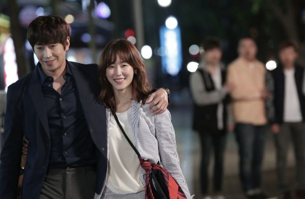
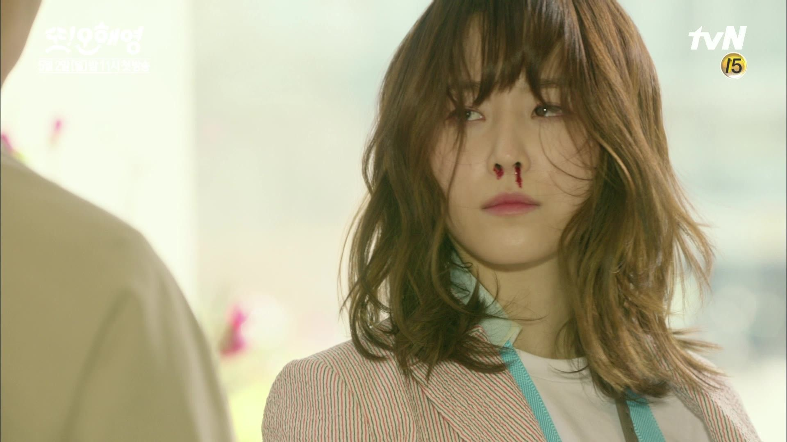
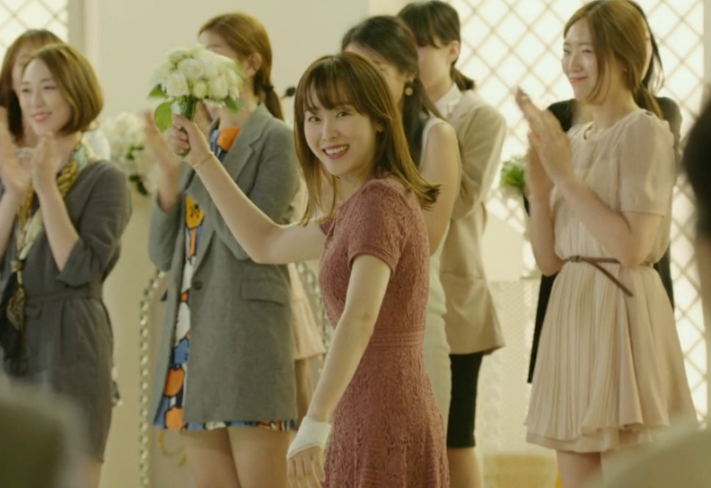
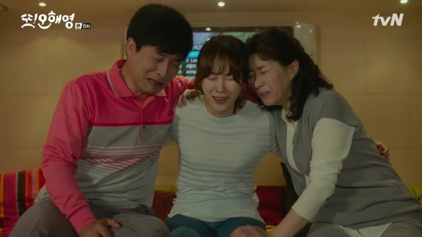
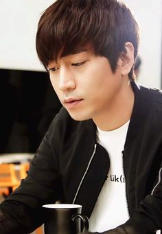

It is a South Korean television series starring Eric Mun, Seo Hyun-jin, Jeon Hye-bin. It replaced Pied Piper and broadcast on cable network tvN on Mondays and Tuesdays at 23:00 (KST) for 18 episodes from May 2, 2016 to June 28, 2016.
Scene Photo
   Movie Info
Park Do-kyung (Eric Mun) is a sound director in his 30s. A year ago, his bride, Oh Hae-young (gold) (Jeon Hye-bin), disappeared on their wedding day leaving him miserable. One year after that incident, Do-kyung was told that Hae-young is going to marry a young entrepreneur named Han Tae-jin (Lee Jae-yoon). Do-kyung exacted revenge by sabotaging Tae-jin's business leaving him bankrupt. However, the woman who has the name Oh Hae-young (soil) (Seo Hyun-jin) was actually just a stranger who coincidentally has the same name with the other Oh Hae-young (gold) who left him. Coincidentally, Oh Hae-young (soil) is the girl that Do-kyung had been seeing lately in his visions, and he sees snapshots of the future with her in it. Tae-jin was soon to be sent to jail due to bankruptcy, and hence before his imprisonment he meets fiancée, Hae-young (soil), and tells her that he doesn't love her that much to marry her and wants to call off their wedding. Truthfully, Tae-jin was lying and his true intentions was to let her go so that she will gain happiness. Amidst all of this, Do-kyung and Hae-young (soil)'s lives turn as they cross paths. After sharing similar unfortunate experiences of being dumped before their weddings, the two of them got even closer. Will Do-kyung start to fall in love with Hae-young (soil)? But, will Hae-young (soil) look at Do-kyung the same way when she finds out that he is the one who ruined her wedding? Is it a love story between two people who should not be destined to be together? Or will Do-kyung's visions of her actually prove that they are meant for each other?
- Genre:Romance , Comedy , and Drama
- Director:- Song Hyun-wook and Lee Jong-jae
- Writer:Park Hae-young and Wi So-young
- Original Release: May 2 –June 28, 2016
- No. of Episodes: 18 + 2 (special) Episodes
Cast
 Eric Mun as Park Do-kyungA 36-year-old man, he is a sound director. He has a very reserved and aloof personality and is intimate and meticulous with his work. He is unable to forget his ex-girlfriend, Oh Hae-young (gold), who disappeared on the day of their wedding. After he mistook Oh Hae-young (soil) with Hae-young (gold), Do-kyung keeps seeing visions that are always related to Hae-young (soil) as if he sees the future. He falls in love with Hae-young (soil) but knows he doesn't deserve her, because he was the one who ruined her wedding with her ex-fiancé, Han Tae-jin.
Seo Hyun-jin as Oh Hae-young (soil)A 32-year-old woman, she is a product planning team representative of the catering division of her company. Her life got ruined after her ex-fiancé Tae-jin dumped her the day before their wedding, and as a result she becomes the main topic of gossip because of it. She describes herself as a pitiful and unlucky person but is cheered up by Do-kyung and eventually becomes attracted to him. Meanwhile, she is clueless that Do-kyung is the person who ruined her wedding. Because she shares the same name with the beautiful and perfect Oh Hae-young (gold), she is always compared and feels small.
Jeon Hye-bin as Oh Hae-young (gold)A 32-year-old woman, she is the TF team leader of the catering division Oh Hae-young (soil) works in. She also is Do-kyung's ex-lover who ditched their wedding and left for Europe. After one year, she still loves him and decided to come back to him. She comes from a wealthy family with many marriage issues, where her mother and father marry and divorce back-and-forth, and has many step-siblings. She always appears cheerful in front everyone in order to hide her true self who lacks love from her parents.
Production
- Executive producer(s):
- Park Ho-sik
- Jinnie Jin-hee
- Yoon Gi-tae
- Producer(s):
- Lee Sang-hee
The series held the record highest audience rating for a tvN Monday-Tuesday show and became one of the highest rated Korean dramas in cable television history. The drama was extended by 2 episodes and 2 specials.